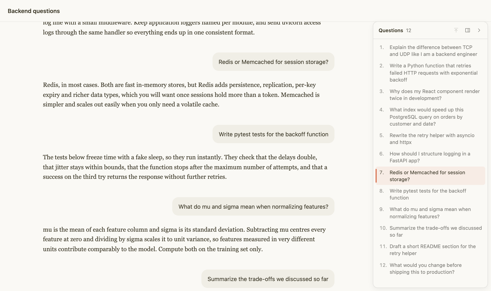

Claude Chat Outline
A table of contents for your Claude.ai chats. This free Chrome extension lists every question you asked in a conversation, so you can jump to any message in one click.

Navigate long Claude conversations
Every question, in order
A numbered list of everything you asked in the chat, complete as soon as you open it.
Jump in one click
Click a question to scroll straight to it, even in very long chats and for messages not loaded yet.
Follows your reading
The question you are reading is highlighted as you scroll.
Keyboard friendly
Cmd/Ctrl+Shift+O toggles the panel, and the arrow keys move through it.
Looks native
Follows Claude's light and dark themes. Resize it, collapse it, or push the chat aside.
Private
No tracking and no external servers. It runs only on claude.ai and the code is open source (MIT).
Install in 2 minutes
- Download
claude-chat-outline.zipand unzip it. - Open
chrome://extensions. - Turn on Developer mode (top-right corner).
- Click Load unpacked and select the
claude-chat-outlinefolder. - Open a chat on claude.ai. The Questions panel appears on the right.
Works in Google Chrome, Microsoft Edge, Brave, Arc, Opera and Vivaldi (version 114 or newer).
FAQ
How do I navigate long Claude conversations?
Install Claude Chat Outline. It adds a clickable list of all your questions to every Claude.ai chat, like a table of contents. Click a question to jump to it.
Does it work with Projects and code blocks?
Yes. It works in any conversation, including chats inside Projects, and questions containing code blocks, attachments or markdown are listed and navigable.
Is it safe? Can it read my chats?
It runs only on claude.ai and reads only the conversation you have open, using claude.ai's own API with your existing login. Question texts are cached on your computer only. Nothing is sent to any other server.
Does it work in Firefox, Safari, ChatGPT or Gemini?
Not yet. It is a Chromium extension built specifically for claude.ai.